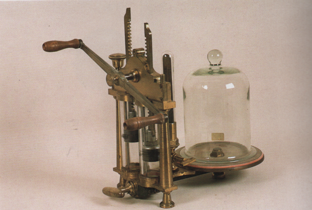

Macchina a doppio effetto
Scuola di provenienza: Liceo Classico "P. Colletta", Avellino
Settore: Meccanica
Costruttori: Sconosciuto
Materiali: Ottone, legno e vetro
Accessori: Nessuno
Stato di conservazione: Buono a parte i fori intasati e le guarnizioni consumate.
Descrizione: Tipica pompa pneumatica di modello francese a due cilindri di cristallo molto popolare tra il 1830 circa e gli inizi del 1900. Una leva (a due bracci) fa ruotare un rocchetto dentato che con due cremagliere fa muovere due stantuffi alternativamente. Ad ogni movimento, l´aria passa nell´uno e nell´altro corpo di pompa. Per queste tali macchine sono dette a doppio effetto. Il vuoto si realizza con velocità doppia rispetto alle macchine con un solo corpo.